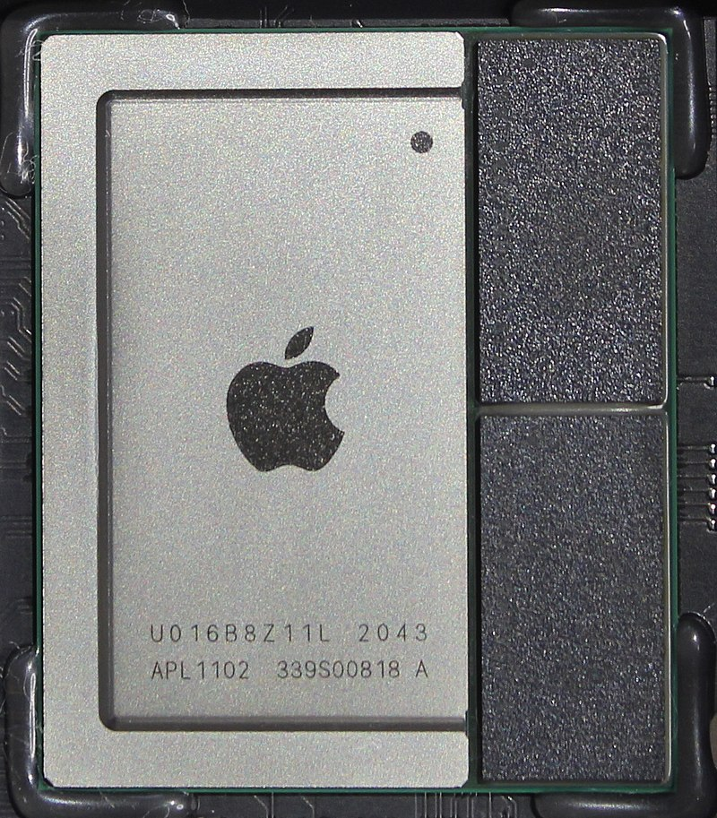

Apple M1 — система на кристалле ARM-архитектуры компании Apple из серии Apple silicon, используемая в компьютерах Mac, ноутбуках MacBook и планшетах iPad Pro и iPad Air, производится контрактным производителем TSMC на 5-нанометровом техпроцессе и содержит около 16 миллиардов транзисторов. Первыми устройствами на M1 стали MacBook Air 2020 и Mac Mini 2020, выпущенные в ноябре 2020 года. А затем в апреле 2021 года был представлен 24-дюймовый iMac и iPad Pro на SoC Apple M1. 8 марта 2022 года был анонсирован iPad Air 5-го поколения на чипе Apple M1

Динамическая технология бинарной трансляции Rosetta 2 позволяет запускать на продуктах, оборудованных М1, программное обеспечение, созданное для процессоров с архитектурой x86 под управлением операционной системы macOS. При этом работа всех программ, разработанных под архитектуру Х86, не гарантируется и работать они будут медленнее.
M1 использует единую конфигурацию памяти LPDDR4X SDRAM 4266 МТ/с (в разных моделях — 8 ГБ и 16 ГБ), разделяемую всеми компонентами процессора.
SoC и RAM монтируются совместно в рамках конструкции system-in-package. Графика Чип включает в себя разработанный Apple 8-ядерный (в некоторых моделях — 7-ядерный) графический процессор (GPU) со 128 исполнительными блоками, который, по утверждению Apple, может обрабатывать одновременно порядка 25 000 потоков. Плюс чип ещё содержит 16-ядер встроенного ИИ-ускорителя (NPU), способный выполнять 11 триллионов операций в секунду[9]. Также в M1 интегрированы процессор обработки сигналов изображения (ISP), хранилище NVMe и контроллеры Thunderbolt 4
MacBook Air 2020 — с ноября 2020 года;
MacBook Pro 2020 — с ноября 2020 года;
Mac Mini 2020 — с ноября 2020 года;
iMac 24" (2021) — с апреля 2021 года;
iPad Pro (2021) — с апреля 2021 года;
iPad Air 5 — с марта 2022 года.
Apple M1 Pro — 10-ядерный ARM процессор изготовляемый по 5-нанометровому техпроцесс TSMC. Чип содержит 10 ядер CPU (8 производительных и 2 энергоэффективных) и 16 графических ядер GPU с 2048 исполнительными блоками, плюс ещё 16-ядер встроенного ИИ-ускорителя. Пропускная способность встроенной объединённой памяти (ОЗУ + Видеопамять) составляет 200 Гбайт/с. Процессор содержит 33,7 млрд транзисторов
Apple M1 Max — 10-ядерный ARM процессор изготовляемый по 5-нанометровому техпроцесс TSMC. Чип содержит 10 ядер CPU (8 производительных и 2 энергоэффективных), 24 или 32 графических ядра GPU и 16-ядер встроенного ИИ-ускорителя. Пропускная способность встроенной объединённой памяти (ОЗУ + Видеопамять) составляет 400 Гбайт/с. Процессор содержит 57 млрд транзисторов
Apple M1 Ultra — 20-ядерный ARM процессор используемый в компьютерах Mac Studio с 2022 года, изготовляемый по 5-нанометровому техпроцесс TSMC. Чип содержит 20 ядер CPU (16 производительных и 4 энергоэффективных), 48 или 64 графических ядра GPU и 32-ядра встроенного ИИ-ускорителя. Пропускная способность встроенной объединённой памяти (ОЗУ + Видеопамять) составляет 800 Гбайт/с. Основной особенностью M1 Ultra является архитектура UltraFusion, которая объединяет два чипа M1 Max в один гигантский процессор, содержащий 114 млрд транзисторов